{{ result.name }}
木構造
竹構造
RC構造
鋼構造

{{ result.name }}
Team
Film
Contact
中文（原文）
{{ lang.label }}
{{ node.name }}
{{ node.name }}
{{ centerTitleCombined }}
Architecture + Structure
×
Architecture + Structure
{{ node.name }}